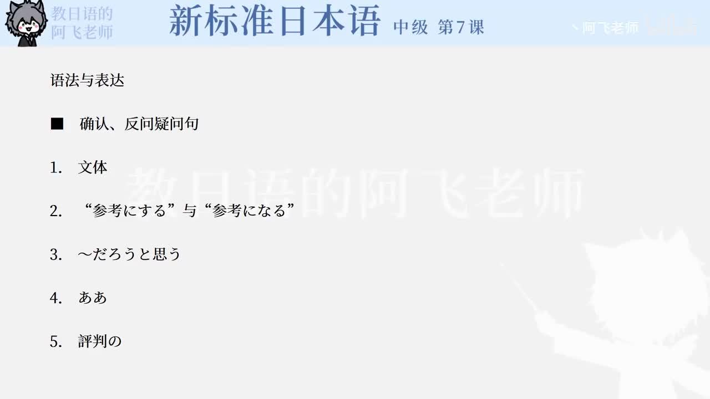

Bilibili P136 · Dialogue Reading
打ち合わせ
围绕“金星”广告活动企划，听懂会议中如何追问含义、说明方案、用条件分类提出会场候选，并把讨论推进到企划会议前的准备。
全篇听力精讲
按 12 句会话轮播。每句依次播放日语原句、中文翻译、结构说明、词块提醒和语法要点。
这段会话在做什么
确认企划含义李主任逐一追问广告和料理比赛两个企划的具体内容。
说明卖点中井强调参考成功广告；野田强调高级酒店、明星和媒体话题性。
推进会议准备最后要求各自把方案在企划会议前具体整理。
会话推进链
1 · 追问含义これはどういう意味？
2 · 说明依据参考になるだろう
3 · 展开方案コンテストはパーティー形式
4 · 明确任务具体的にまとめてください
逐句精读
重点语法与表达
课文词汇与固定搭配
练习与复习
来源说明：视频标题、时长、CID 和首帧来自 Bilibili 公开视频接口；课文原文来自本地《新标准日本语》中级第7课教材数据，并修正少量明显录入误差用于学习。